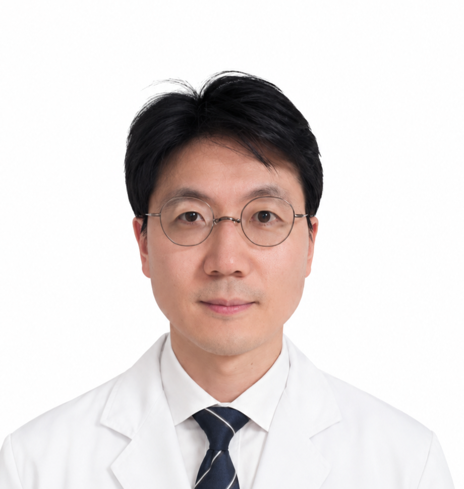

DENTAL SPECIALIST
김민규 대표원장
보철과 전문의
보철 진료
주요 약력
- 서울대학교 졸업
- 서울대학교 치의학대학원 졸업
- 서울대학교 치과병원 보철과 인턴, 레지던트 수료
- 서울대학교 치과대학 치의학 석사(보철학전공)
- 서울대학교 치과대학 치의학 박사수료(보철학전공)
- 서울대학교 치과보철과 임상자문교수
- 보건복지부 인정 치과보철과 전문의
- 오스템 임플란트 임상지도교수(AIC Faculty)
- 대한치과보철학회 정회원/우수회원
- 서울특별시 치과의사회 학술위원(2020~현재)
- 서울특별시 성북구 학술이사(2023~현재)
- 대한구강악안면임플란트학회 정회원